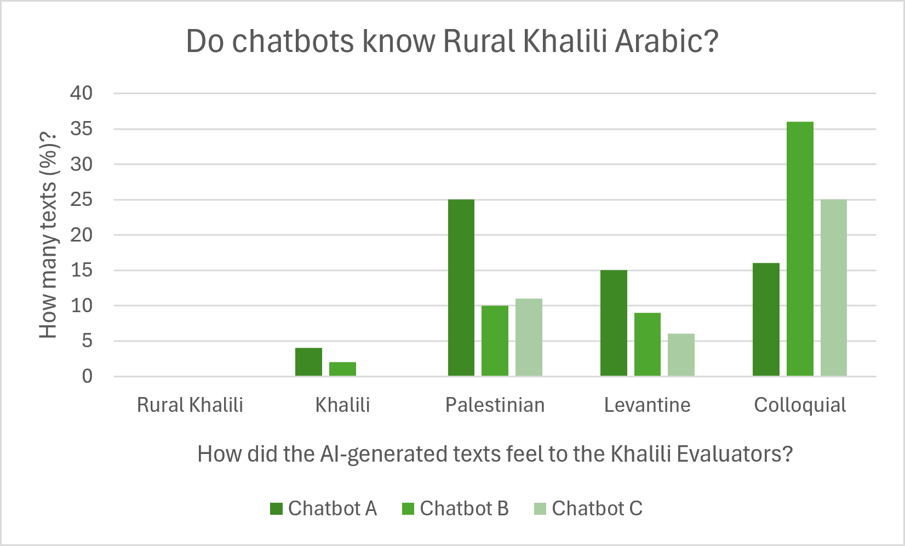
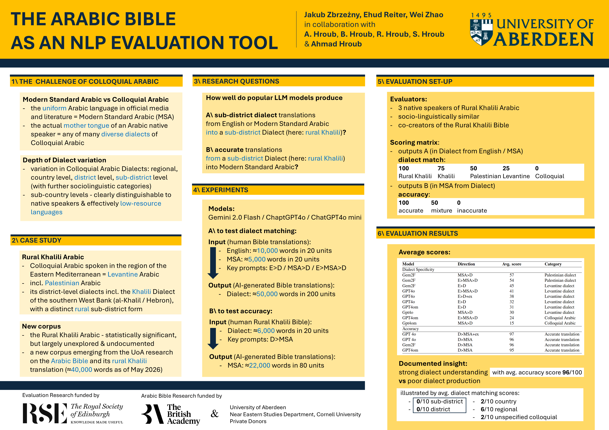

Why AI-free Learning and Teaching?
The first question to ask is: What type of Arabic do you want to learn or practise? If your goal is to learn or practise Modern Standard Arabic, the school-taught language of official media, law, and scholarly literature, you may benefit from interacting with chatbots powered by Large Language Models. This is because these models are built – or trained as computer scientists would say – predominantly on written and oral expressions of Modern Standard Arabic, widely available online.
However, if your goal is to learn Colloquial Arabic, which is the actual mother tongue of any Arabic native speaker, the situation dramatically changes. Now, ask any popular chatbot if it knows Colloquial Arabic, it will assure you it does. Indeed, it will confidently start producing content that is meant to represent different dialects, that is, regional types of Colloquial Arabic. On the surface, the content will resemble major families of Colloquial Arabic. It may well look Egyptian, or North-African, or Levantine, that is, representing countries from the eastern coast of the Mediterranean. Your chatbot may well claim that its outputs reflect how people speak or write in specific areas – in Cairo, or perhaps Morocco, or Syria. However, if you look at it more closely, you will see that such content is nothing more than an artificial mixture of many different dialects from a particular region. In other words, no Arabic native speak would speak or write in this way.
This is precisely the case of Khalili Arabic. Thanks to a research grant from the Royal Society of Edinburgh, we conducted extensive experiments on how Artificial Intelligence handles it. In this investigation we teamed up with Computer Scientists from the University of Aberdeen. We asked several popular chatbots to translate selected texts from English or Modern Standard Arabic into the rural Khalili Arabic. We prompted the chatbots to generate 200 texts, each of about 250 words, which were meant to represent the dialect of our Palestinian partners. In total, this was about 50,000 words, which is like a medium-size book. Then, our Khalili team members scored each text – or evaluated in the computer science jargon – on how closely it actually resembles their dialect. The results were telling. Have a look at this graph:

Not a single text felt to our evaluators as reflecting the rural variety of Khalili Arabic, and less than 10% were recognisable as Khalili in general. Between 10% and 30% texts felt as representing unspecified Palestinian dialects. All other texts felt as Levantine or simply Colloquial. This is why you will not learn a specific dialect from a chatbot, and this is why we are not using Artificial Intelligence for creating any teaching content here.
Have a look at our conference poster:

You may also wish to read our academic paper, which you will find here. There you will also find further references to other scholarly literature on this topic.